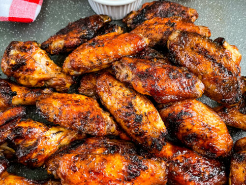

BBQ chicken wings

Description
Oven BBQ Chicken Wings - this is by far one of the best ways of preparing chicken wings. The spicy sweet sticky sauce is simply amazing and hard to resist.
Ingredients
Makes about 4 servings
- 2 1/4 pounds (1kg) chicken wings, tips removed
- 2 tbsp (30ml) oil
- 1/2 tsp (3g) salt
- 1 tsp (3g) garlic powder
- 1 tsp (3g) smoked paprika
- 1/2 tsp (2g) black pepper
- BBQ Sauce
- 1 cup (240g) barbecue sauce
- 1/4 cup (80g) honey
- 2 tbsp (30g) ketchup or hot sauce (sriracha)
Steps
- oven to 440F (220C). Line a baking sheet with parchment paper and place an oven rack on top.
- the chicken wings into a large bowl, add oil and toss to coat. In a small bowl combine salt with garlic powder, smoked paprika and black pepper. Add the mixture over the chicken wings and toss to coat evenly.
- Arrange the seasoned chicken wings on the rack in one layer.
- Bake for 40-45 minutes depending on their size, flipping once after the first 20 minutes.
- While the wings are baking prepare the sauce.
- Place the barbecue sauce with honey and hot sauce (your choice) into a small saucepan. Simmer over low heat for 2-3 minutes.
- Remove the wings form the oven and brush with barbecue sauce.
- Bake for 10-15 minutes until glaze is glossy and caramelized.
- Garnish with green onion and serve with your favorite dipping sauce. Enjoy.